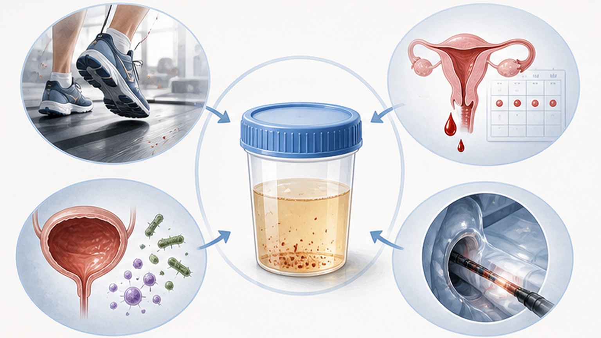
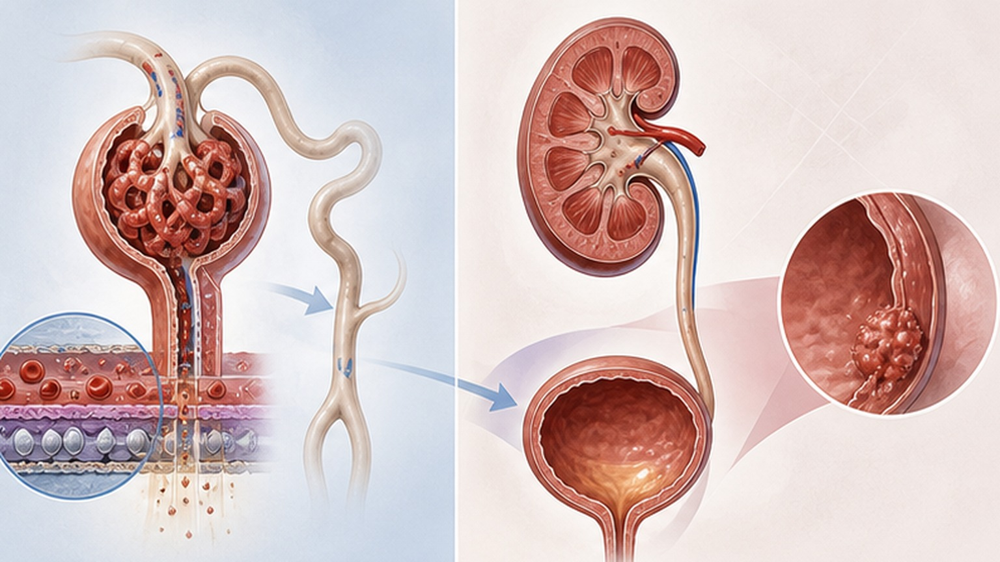
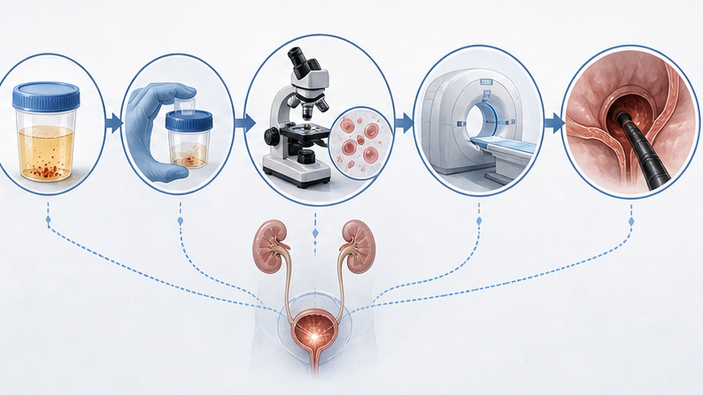

PATIENT EDUCATION · UROLOGY · NEPHROLOGY
현미경적 혈뇨,
위험도에 맞춰 안전하게
눈에 보이지 않는 미세한 혈뇨 (Microscopic Hematuria) — 대부분 양성, 그러나 위험도에 따라 정확한 평가가 필요합니다
02
CHAPTER 01 · REASSURANCE
걱정하지 마세요 — 대부분 암이 아닙니다
막연한 두려움 대신, 객관적 데이터로 안심하고 필요한 평가를 받으세요
95%↑
전체 현미경적 혈뇨 환자의 95% 이상은 안전한 양성 질환입니다. 악성종양(암)이 발견될 확률은 5% 미만이며, 저위험군에서는 0.4% 미만으로 더 낮습니다.
Why evaluation still matters
대부분 양성이지만, 드물게(< 5%) 비뇨기 종양의 첫 신호일 수 있어 위험도에 맞춘 평가가 필요합니다. 연령·흡연력·혈뇨 정도에 따라 검사 범위가 달라지므로, 무작정 패닉이 아닌 단계적 접근이 정답입니다.
03
CHAPTER 02 · DEFINITION
현미경적 혈뇨 (Microscopic Hematuria) 란
눈에 보이지 않지만 소변검사에서 적혈구가 검출되는 상태
현미경 소변검사에서 적혈구(RBC)가 고배율 시야(HPF)당 ≥ 3개 관찰될 때 진단합니다.
육안으로는 보이지 않는 미세한 출혈이며, 성인 인구의 2~31%에서 발견될 정도로 매우 흔합니다. Dipstick(소변스틱) 검사에서 잠혈(+)만 나온 경우는 위양성이 흔하므로 반드시 현미경 재확인이 필요합니다 — 스틱 결과만으로는 확진하지 않습니다.
Diagnostic threshold
≥ 3 RBC/HPF
고배율 시야 1개당 적혈구 3개 이상 — 단 1회 검사로 진단합니다.
Adult prevalence
2 – 31%
성인에서 매우 흔한 소견 — 그 자체가 진단명이 아닌 평가의 출발점입니다.
04
CHAPTER 03 · EXCLUDE FIRST
먼저 확인할 것 — 일시적 원인 배제
정밀 검사로 가기 전, 다음 4가지 원인이 있는지 확인합니다
EXCLUDE · 01
요로감염 (UTI)
배뇨 시 따가움·빈뇨 등 증상이 동반되면 먼저 항생제로 감염 치료. 치료 후 소변을 재검사해 혈뇨가 사라졌는지 확인하는 것이 권장됩니다.
EXCLUDE · 02
월경 오염 (Menstrual)
여성의 경우 생리혈이 소변에 섞여 위양성(가짜 양성) 결과가 나올 수 있습니다. 반드시 생리 기간을 피해서 소변을 채취해야 합니다.
EXCLUDE · 03
격렬한 운동 (Exercise-induced)
마라톤·등산 등 격렬한 운동 직후 일시적으로 발생할 수 있습니다. 보통 24~72시간 내 자연 소실 — 최소 48시간 휴식 후 재검사를 권장합니다.
EXCLUDE · 04
오해 금물 — 항응고제 복용
아스피린·항응고제가 혈뇨를 직접 만드는 것이 아닙니다. 이미 숨어있던 출혈을 더 잘 보이게 할 뿐이므로, 다른 환자와 동일한 평가가 필요합니다.
중요
위 일시적 원인을 배제한 뒤에도 혈뇨가 지속되면, 위험도(저·중·고)에 따른 정식 평가로 넘어갑니다.

05
CHAPTER 04 · COMMON CAUSES
흔한 원인들 — 대부분 양성, 교정 가능
비뇨기 종양보다는 일상적이거나 치료 가능한 원인이 훨씬 흔합니다
CAUSE · 01
요로감염 (UTI)
배뇨 시 따가움·빈뇨 등의 증상을 동반할 수 있습니다. 항생제 치료 후 소변을 재검사하여 혈뇨가 사라졌는지 확인하는 것이 표준입니다.
CAUSE · 02
요로결석 (Urolithiasis)
결석이 요로 점막을 긁으면서 미세한 출혈을 유발할 수 있습니다. 옆구리 통증·잔뇨감이 동반될 수 있으며 영상 검사로 확인합니다.
CAUSE · 03
양성 전립선비대 (BPH)
남성에서 흔하며, 전립선이 커지면서 주변 혈관이 약해져 출혈이 발생할 수 있습니다. 배뇨 지연·약한 소변 줄기 증상이 함께 나타납니다.
CAUSE · 04
운동성 혈뇨 (Exercise-induced)
마라톤·등산·격렬한 운동 후 일시적으로 발생할 수 있습니다. 보통 충분한 휴식 후 24~72시간 내에 자연스럽게 소실됩니다.
CAUSE · 05
월경 오염 (Menstrual)
여성의 경우 생리혈이 소변에 섞여 위양성(가짜 양성) 결과가 나올 수 있습니다. 반드시 생리 기간을 피해서 소변을 채취해야 합니다.
CAUSE · 06
사구체 질환 (Glomerular)
IgA 신병증, 얇은 기저막 질환 등 사구체 이상으로 인한 혈뇨입니다. 단백뇨나 고혈압이 동반될 경우 신장내과 진료가 필요합니다.
06
CHAPTER 05 · SOURCE OF BLEEDING
콩팥(사구체) vs 비뇨기(요로) — 출처를 구별합니다
소변 검사에서 동반되는 단서로 출혈이 어디서 시작되었는지 가늠합니다
!
사구체(콩팥) 출처를 시사
- 모양이 찌그러진 이형 적혈구 (Dysmorphic RBC)
- 적혈구가 뭉친 적혈구 원주 (RBC cast)
- 거품뇨를 동반하는 단백뇨 (Proteinuria)
- 고혈압·부종 등 신기능 이상 시사 소견
- IgA 신병증, 얇은 기저막 질환 등 의심
- → 신장내과(콩팥) 진료가 권장됩니다
+
비뇨기(요로) 출처를 시사
- 정상 모양의 균일한 적혈구
- 요로감염·요로결석·BPH 동반 가능
- 옆구리 통증·배뇨 증상이 함께
- 방광·요관·신우 등 요로 점막 손상
- 위험군에 따라 영상·내시경 평가
- → 비뇨의학과 평가가 우선 고려됩니다

07
CHAPTER 06 · RISK STRATIFICATION
위험도 평가 — 저·중·고 3단계
환자의 특성(연령·흡연력·혈뇨 정도)에 따른 AUA/SUFU 2025 위험군 분류
LOW · 저위험군
젊은 비흡연자, 적은 RBC
여성 < 60세 / 남성 < 40세, 비흡연 또는 < 10갑년, RBC 3~10/HPF, 기타 위험요인 없음. 악성 확률 < 0.4%로 매우 낮습니다.
INTERMEDIATE · 중등도
중간 연령·흡연력
여성 ≥ 60세 또는 남성 40~59세, 흡연력 10~30갑년, RBC 11~25/HPF 범위. 표준 평가가 필요한 그룹입니다.
HIGH · 고위험군
고령 남성·다흡연자
남성 ≥ 60세, 흡연력 > 30갑년, RBC ≥ 25/HPF, 또는 육안적 혈뇨 병력, 직업 노출(벤젠 등)·골반 방사선 치료력 동반 시.
CRITERIA · 04
연령 및 성별
남성이 여성보다 비뇨기 종양 위험이 더 큽니다. 여성은 연령만으로는 고위험군으로 분류하지 않습니다 (다른 요인 필요).
CRITERIA · 05
흡연력 (갑년)
하루 한 갑 × 30년 = 30갑년. 흡연은 방광암의 가장 강한 환경 위험인자로, 갑년이 많을수록 위험도가 직선적으로 상승합니다.
RED FLAG · 06
육안적 혈뇨 병력
한 번이라도 눈으로 보이는 혈뇨가 있었다면 그 자체로 고위험군 — 악성 확률이 약 11%로 현미경적 혈뇨보다 훨씬 높아집니다.
08
CHAPTER 07 · TAILORED WORKUP
필요한 검사 — 위험군별 맞춤 평가
위험도와 동반 소견에 따라 검사 강도가 달라집니다
LOW · 저위험군
6개월 이내 소변 재검사
즉각적 방광경·영상검사는 불필요. 수분 충분히 섭취 → 격렬한 운동 48시간 휴식 후 채뇨 → 요로감염 치료 완료 후 확인이 우선입니다.
INTERMEDIATE · 중등도
방광경 (Cystoscopy) + 신장 초음파 (Renal US)
표준 평가. 방광경이 부담될 경우 소변 종양표지자 검사로 보조 판단 가능 — 단, 12개월 내 재평가가 필수입니다.
HIGH · 고위험군
방광경 + CT 요로조영술 (CT Urography)
상부·하부 요로 전체에 대한 가장 철저한 병변 평가. 조영제 알레르기·신기능 저하 시에는 MRI나 초음파로 대체합니다.
GLOMERULAR · 사구체 의심
신장 기능 평가 (uACR/uPCR + Cr/eGFR)
이형 적혈구·적혈구 원주·단백뇨 동반 등 사구체 이상 시사 시, 정밀 진단을 위해 신장내과 전문의 진료를 권장합니다.
중요
항응고제 복용과 무관하게 동일한 검사 절차를 따릅니다. 약 때문에 출혈이 더 잘 보이는 것일 뿐, 평가 기준은 같습니다.
09
CHAPTER 08 · PATIENT JOURNEY
발견부터 재평가까지 — 4단계 흐름
검진 잠혈 양성에서 시작해 위험군별 평가와 재검까지의 표준 경로
1
발견 · Dipstick (+)
건강검진 소변스틱에서 잠혈(+). 위양성이 흔하므로 단독으로 확진하지 않고, 현미경 재확인이 반드시 필요합니다.
2
현미경 확인 · ≥ 3 RBC/HPF
병원에서 현미경으로 적혈구 수를 직접 확인. 일시적 원인(UTI·생리·운동) 배제 후 진단을 확정합니다.
3
위험도 평가 · 저·중·고
연령·성별·흡연력·RBC 수·동반 위험요인을 종합해 AUA/SUFU 2025 기준으로 분류, 검사 강도를 결정합니다.
4
맞춤 검사 후 재평가
위험군별 표준 검사 시행. 저위험은 6개월 내, 중등도는 12개월 내 재평가. 새로운 증상 시 즉시 재진료입니다.
주의
새로 보이는 혈뇨(육안 혈뇨)·혈뇨 양 급증·새로운 비뇨기 증상이 발생하면 정해진 재평가 시점을 기다리지 말고 즉시 내원하세요.

10
CHAPTER 09 · RED FLAGS
이럴 때는 즉시 재진료가 필요합니다
아래 신호 중 하나라도 해당되면 재평가 시점을 기다리지 말고 빠르게 내원하세요
!
육안적 혈뇨가 새로 보일 때
소변이 붉거나 콜라색으로 보이면 — 한 번이라도 발생 시 그 자체로 고위험군. 악성 확률이 약 11%로 상승합니다.
!
혈뇨 양이 크게 증가
RBC 수가 이전 대비 뚜렷하게 늘었거나, 새 위험인자(흡연 시작·직업 노출 등)가 추가되면 재평가 대상입니다.
!
새로운 비뇨기 증상 동반
옆구리 통증·심한 빈뇨·잔뇨감·배뇨 시 통증이 새로 생기면 요로결석·감염·종양 가능성을 함께 평가해야 합니다.
!
단백뇨·고혈압·부종 동반
거품뇨·혈압 상승·다리 부종이 함께 나타나면 사구체 질환을 시사 — 신장내과 진료를 미루지 마세요.
11
CHAPTER 10 · ACTION
오늘 꼭 기억할 핵심 8가지
현미경적 혈뇨는 대부분 양성이지만, 위험도에 맞춘 평가는 반드시 필요합니다
01
현미경적 혈뇨 = ≥ 3 RBC/HPF, Dipstick 단독으로는 확진 불가
02
전체 환자의 95% 이상은 양성, 저위험군 악성은 < 0.4%
03
UTI·월경·격렬한 운동·항응고제는 먼저 배제해야 할 일시적 원인
04
위험도는 저·중·고 3단계 — 연령·성별·흡연력·RBC 수로 결정
05
저위험은 6개월 내 재검, 중등도는 방광경 + 신장 초음파
06
고위험은 방광경 + CT 요로조영술로 상하부 요로 철저 평가
07
이형 적혈구·단백뇨·고혈압 동반 시 신장내과 의뢰
08
육안 혈뇨가 새로 보이거나 양이 늘면 즉시 재진료
END OF DECK · THANK YOU
위험도에 맞춘 평가로
안심하고 정확하게
현미경적 혈뇨, 함께 단계적으로 살피겠습니다 — 궁금한 점은 언제든 문의해 주세요
Phone
031-893-4560
Address
경기 용인 수지구
광교중앙로 298, 4층
광교중앙로 298, 4층
Hours
평일 08:30~18:30
토요일 08:30~13:30
토요일 08:30~13:30
SCAN TO REVISIT
집에서 다시 보기
QR을 스캔하면 핸드폰에서
같은 자료를 다시 볼 수 있어요
같은 자료를 다시 볼 수 있어요